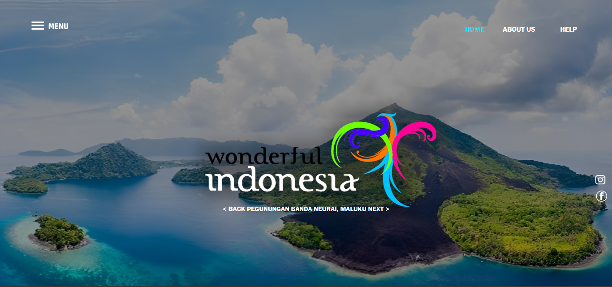
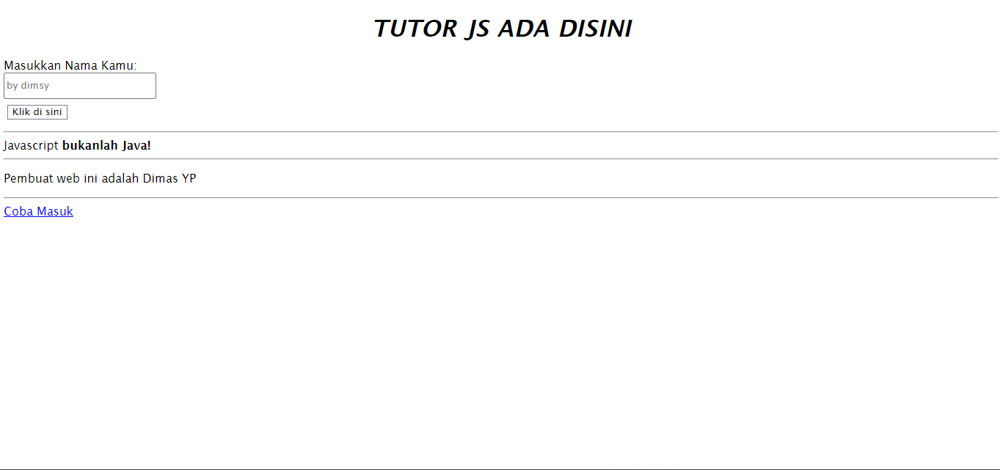
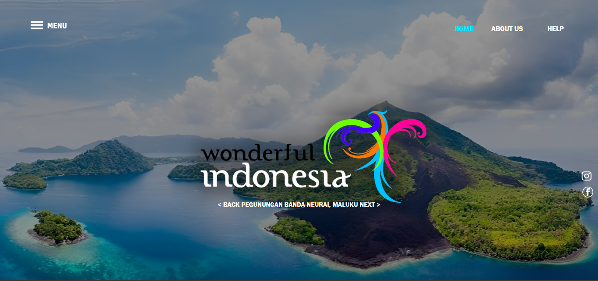
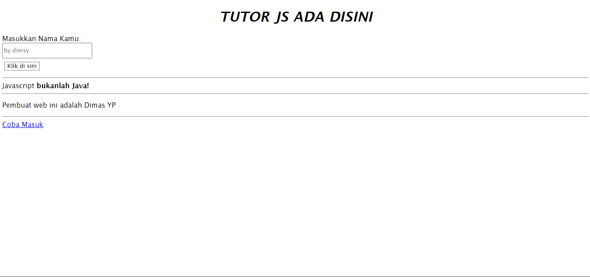

.
DimsyStudio berisi apa saja yang telah dibuat oleh pembuat web ini
Hanya seorang pemuda berjiwa petualang yang lahir pada tanggal 17 Agustus 2006, dengan semangat yang membara menjadi web & game developer. Meskipun hanya memiliki perangkat sederhana, ia menggali potensi tak terbatas dan menjelajahi dunia digital dengan penuh keberanian.
 


